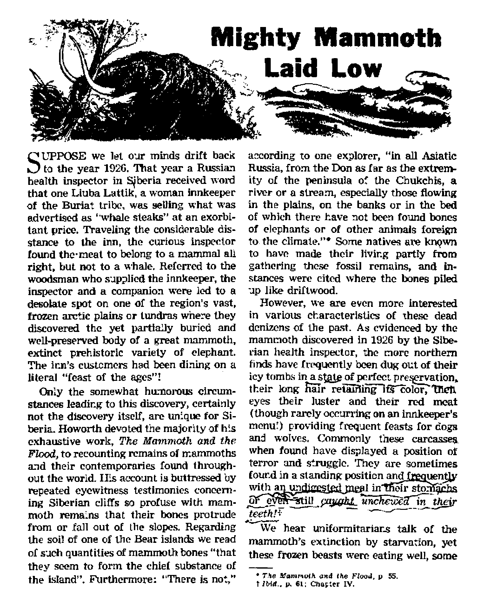
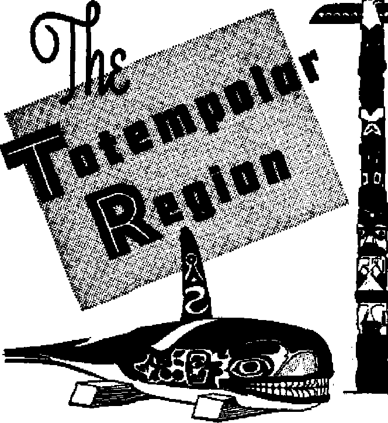
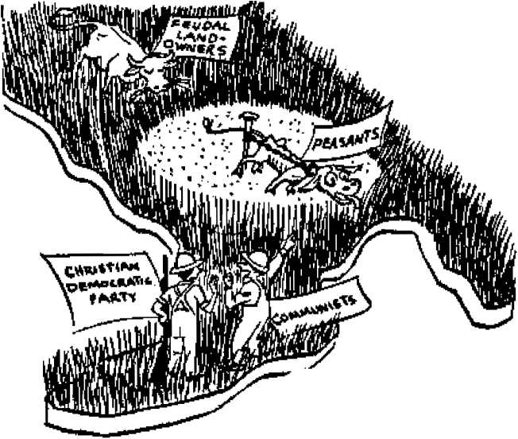

Powerful proof of the Bible flood is carved in the crust of the earth
What sudden tragedy befell the giant beasts?
Wresting the Land from Italy’s Feudal Lords Medieval slavery stubbornly clings to Italian soil
Sacrificing scholarship for creed
THE MISSION OF THIS JOURNAL
News sources that ore able to keep you awake to the vital tauee of our time# must be unfettered by censorship and selfish Interests* “AwakeI” has no fetters. It recognizes facte* faces facte, is free to publish facte. It Is not bound by political ambitions or obligations; it te unhampered by advertisers whose toes must not be trodden on; It is unprejudiced by traditional creeds* This journal keeps itself free that it may speak freely to you. But it does not abuse its freedom. It maintains integrity to truth.
“Awake 1’* uses the regular news channels* but is not dependent on them. Its own correspondents are on all continents, in scores of nations. From the four corners of the earth their uncensored; on-the-acenes reports come to you through these columns. This journal's viewpoint is not narrow* but is international. It is read in many nations, in many languages, by persons of all ages. Through its pages many fields of knowledge pass in review—government, commerce, religion, history, geography, science, social conditions, natural wonders—why, its coverage is as broad as the earth and as high as the heavens.
“Awake 1” pledges itself to righteous principles, to exposing hidden foes and subtle dangers, to championing freedom for all, to comforting mourners and strengthening those disheartened by the failures of a delinquent world, reflecting sure hope for the establishment of a righteous New World,
Get acquainted with “Awake!” Keep awake by reading “Awake!”
Published semimonthly By WATCHTOWER BIBLE AND TRACT SOCIETY, INC.
117 Adams Street Brooklyn 1, N. Y„ U. S. A.
N. H. Knoab, President Gbant Suiteb, Secretary
Printing this issue: 975,000 Five cants a copy
Uniiaju In wkleh the h prblhhtg;
Semimonthly—Afrikaans, Endlsh, Flndth* French, German, Hollandlsh, Nonreturn, Spanish, Swedish, Monthly—Daniab. Greek, Fortuities^ Ukrainian,
Offices Yearly ,ubscription Btte
Amerlu, IIA., in Adams St, Brooklyn 1, NA. »1 AsitnHi, 11 Beresford Bd., St rath field, N.ELW. 8 s CtMO, 40 Irwin Ave., Toronto 5, Ontario *1 Eniland, 34 Craven Terrace, London, w. 3 Ts Stith Africa, PrirstrBtj, P.O. Elands to nteio,
Tran sraa] . 7 s
Rinittiiim ebnuM tn to office In your country in compliance with rrtUUticM to guarantee Bile dellr^ry of money. Btmlftucec an leeupteff at Brooklyn from countries where no otftoe 1* loafed, by international money order only. Subscription rata in different countries ere hrfe staled In local currency. Not Im of wIfiUm (with renewal bluk) is sent at least two issues before subscription capites. Chans* »f aggress when sent to our office mar be expected eff actin within one month. Send your old as well as new address,
Entered as second-clsss matter at Brooklyn, N. Y, Art of Warth 3, 18T9. Printed in 1L 8. A.
CONTENTS
The Last World Died Violently!
The Old World Left in a Hurry 6
Scoffers Advocate "Slow Death”
Sudden Death and Global Change
The Last "World's11 Lesson for This One 12
Nwankwo Takes a Wife—How They Do
Wresting the Land from Italy's
Troubled Minds in Today's World
"Your Word Is Truth”
Injecting Bias into God’s Word
£/ “Now ft is high time to awake.”—Romans 13:11 &
VoTum* XXXIII ~ / Brooklyn, Y * Auguat 22, 1952 Number 16
ON April 8 President Truman issued an executive order seizing the nation’s steel mills and placing them under government control and operation. Reason for this was offered in the fact that the United Steelworkers of America, C.I.O., was about to execute a nation-wide steel strike. Because of defense needs in the present emergency and his own expressed sentiment favoring the cause of the union in its dispute with steel management, the president considered his action justified. At once the private owners appealed to the courts, and following hearing of the case federal district judge David A. Pine ruled on April 29 that the president had exceeded his powers and that the seizure was unconstitutional The United States Court of Appeals stayed action on Judge Pine’s decision, allowing government appeal to the Supreme Court, and at President Truman’s insistence the union held back from a strike threat. On May 12, 13 the Supreme Court heard the case and on June 2 ruled against the president, upholding the lower court by a vote of 6-3.
More than the mere unprecedented seizure of a basic industry was involved in the decision. It was a historical move in the long dispute over centralization of power that dates from the birth of the American republic. It is the Thomas Jefferson-Alexander Hamilton or the Theodore Roosevelt-William Howard Taft controversies anew. For long now the trend toward more and more federal power has threatened to all but destroy completely the magnificent structure of popular rule known to our history as “Jeffersonian democracy". The Supreme Court’s action in the steel case was a long-awaited deterrent to this trend. A review of the Court’s stand reflects these ancient and basic issues.
Voicing the majority opinion, Justice Black said: “The founders of this nation entrusted the law-making power to the Congress alone ip both good and bad times. It would do no good to recall the historical events, the fears of power and the hopes for freedom that lay behind their choice, Such a review would but confirm our holding that this seizure order cannot stand."
Chief Justice Vinson wrote the dissenting opinion and attempted to allay fears of spreading dictatorial powers, saying: “One is not here called upon even to consider the possibility of Executive seizure of a farm, a comer grocery store or even a single industrial plant.” Appealing to the government’s argument that the national emergency justified extraordinary executive action, he added: “Such considerations arise only when one ignores the central fact of this case—that the nation’s entire basic steel production would have shut down completely if there had been no government seizure."
But the majority opinion was not fighting President Truman the man. Their view was long-ranged* regarding the office. Their concern involved the placement of ruling power. Justice Douglas, concurring with the majority, stated succinctly:
“We pay a price for our system of checks and balances, for the distribution of power among the three branches of government. It is a price that today may seem exorbitant to many. Today a kindly president uses the seizure power to effect a wage increase and to keep the steel furnaces in production. Yet tomorrow another president might use the same power to prevent a wage increase, to curb trade unionists, to regiment labor as oppressively as industry thinks it has been. regimented by this seizure.”
And Justice Frankfurter added significantly: “The powers of the president are not as particularized as are those of Congress. But unenumerated powers do not mean undefined powers. The separation of powers built into our Constitution gives essential content to undefined provisions in the frame of our government.”
For a democracy the majority opinion is a refreshing renewal of faith in popular rule. When Thomas Jefferson became America’s third president many were the die-hard Federalists who forecast an era of “mob-rule”. But he was to prove such troubadours of trouble wrong. His administrations firmly established the security of American democracy, the conviction that men could govern themselves. Now the Supreme Court has expressed new faith in that principle, that self-government by a great people is possible “in both good and bad times”. Government by law, not decree, has been given judicial vindication.
But what a responsibility this places on Congress as the law-making body! No court can by legal decision implant wisdom and strength into the legislators. As Justice Jackson said: “I have no illusion that any decision by this court can keep power in the hands of Congress if it Is not wise and timely in meeting its problems.” A congress can hardly act with wisdom if its members busy themselves with home district “pork barrel" projects at the expense of time needed on pressing issues of national concern, if they cater to the interests of lobbyists or are absent while bills are being passed. Ancient Greek democracy failed because it became corrupt. They had 'their five-percenters too. And if mink coats did not cause government scandal there might have been some bribing with sheep-wool cloaks or tunics. In our day the charge of corruption is leveled more seriously than ever and against the strongest, most successful democracy on earth. What does it mean?
It means that at its very best human government is afflicted with inherent weaknesses traceable directly to the exercise of satanic control over the' affairs of earth’s governments. (2 Corinthians 4:4; 1 John 5:19; Revelation 12:12) The greatest corrupter' and grafter of all time, the Devil, has fought a losing battle for six thousand years to wrest the government of all the universe out of the hands of Jehovah God, the Almighty. Not five per cent, not even two per cent, not one-tenth of one per cent will those get in return who follow him, but only .death and loss of everything, at the latest, in the battle of Armageddon. (Revelation 16:14-16) For that reason Christians point out the way of deliverance through the newly installed heavenly government of the Prince of Peace. They appreciate liberal human government just now that better facilitates their preaching work along with the exercise of inalienable human rights. With absolutely no fear of misused power or cruel oppression men everywhere can now trust in this “Wonderful Counsellor, Mighty God, Father of Futurity, Prince of Prosperity”.—Isaiah 9:6, Rotherham.
Ties of drawn-out actions. Tn .despair some have resorted to ’‘‘momentary catastrophes” in an effort to approach a rational explanation of otherwise inex-plair.able evidence. Creep-i ing glaciers or sheets of ice hundreds or thousands cf feet thick are offered, all of which sound dangerously close to catastrophic. TTie prominent physicist, George
OURS is not the? first world. Not if “world” refers to the arrangement or system of things prevailing over a specified period of time. Planet earth was formerly the home of a world very different from ours, to which its stratified rock, fossil cemeteries and numerous occurrences in its crust yet bear witness. Our oldest reliable history booK, the Bible, relates the strange fate of that world in the following few swift lines: “There were heavens in ancient times and an earth standing compactly out of water and in the midst of water by the word of God, and by Those means the world of that time suffered destruction when it was deluged with water.” —2 Peter 3:5, 6, New World Trans.
Today’s geologists are not supposed to believe this account of the last world’s end. Growing up along with Darwinian evolution since the middle of the last century, the theory of ’uniformitarianism has enslaved learned scientists to the conviction that they must explain every change in earth’s past by moans of very slow, gradual processes/ Thus have they been forced to describe such enormous acts as the appearance of mountain ranges and the seesawing of continents and ocean beds through a monotonously molasses-like se-
• The trends 1r modern gecloay. development and sYioriooTrJnBS of the unJformitarlan theory are discussed in our but issue August 3, on paje H. In the ari’cJe, "Earth's Fast— Calm nr Cataclysmic? ‘
Gamow, grows bold beyond words in honestly estimating a series of twelve “revolutions” of the past during which earth development processes were immeasurably speeded up. Follow now the account of the latest of these revolutions as he words it:
“One of the first great achievements of th? Cainozoic revolution . .. was the giant (‘rumpling of the crust in the southern part of Asia, which raised the brand-new mountains of the Himalayas high above the surrounding plains. This crumpling was accompanied by terrific volcanic activity, and unprecedented quantities of basaltic lava were spread over the surrounding regions. The Deccan plateau, for example, which includes a large part of the Indian peninsula, rests upon basaltic rocks 10,000 feet thick, the cooled-down lava poured over the surface of the Earth during this period of upheaval.”*
Whatever else the severest critic might say, there is no denying that words like those bring the Biblical account of the catastrophic Noachian deluge entirely within the realm of science. The universal flood, last of earth's early cataclysms, would hardly require more than one of Gamow's “revolutions”. True, he says the latest of these occurred about forty million years ago, whereas the Bible allows only
mH- .■ ■!
* Biography of the Earth, by George Garr.ow, p. 154. forty-three centuries since the flood. But do not forget that events that happen, suddenly do not require vast time periods to account for them. Furthermore, in our last preceding issue it was shown that the fabulous.time scales of evolutionary scientists were admittedly largely the product of guesswork and void of results in supplying proof for evolutionary changes. The very cornerstone of uniformitarianism, Sir Charles Lyell, confessed the hopelessness of trying to assign “a chronological value” to any of the geological periods except the latest.1 Uniformitarianism, then, has replaced the older theory of catastrophism with guesses, not facts; so we need not fear to quote the older geologists as if they were outdated and disproved. W. B. Galloway, M.A.,t a writer of the last century, gives us the views of Cuvier, who was to the older geological school what Lyell became to the later one:
“ ‘I am well aware,’ says Cuvier, ‘that some naturalists lay prodigious stress upon the thousands of years which they can call into action by a dash of their pens. In such matters, however, our only way of judging as to the effects which may be produced by a long period of time is by multiplying, as it were, such as are produced by a shorter known time.’ And this remark he applies to the question of the fixity or the transmutation of species,—a question which grew up alongside of the assumed vast periods of the geologists. In regard to the periods that preceded man it is unnecessary here to speak; but as to the Diluvial or Boulder deposit Cuvier is very decided. ‘By a careful investigation,’ he observes, ‘of what has taken place on the surface of the globe, since it has been laid dry for the last time, and its continents have assumed their present form, at least in such parts as are somewhat elevated above the level of the ocean, it may be clearly seen that the last revolution, and consequently the establishment of our existing societies, could not have been very ancient. This result is one of the best established, and least attended to, in rational zoology; and it is so much the more valuable, as it connects natural and civil history in one uninterrupted series.’ And again, after taking notice of the traditionary evidence of many nations, as well as the narrative in the book of Genesis, he says in his concluding reflections, ‘I am of opinion, then, with M. Deluc and M. Do-lomieu,;—that if there is any circumstance thoroughly established in geology, it is that the crust of our globe has been subjected to a great and sudden revolution, the date of which cannot be fixed much farther back than five or six thousand, years ago.’ ”
The evidence is overwhelming that the last world left as suddenly as it did catastrophically, nofhaving time to neatly pack before moving. Galloway furnishes an authoritative account of wondrous boulder drifts, the apparently aimless scattering of massive rock formations, often far from native settings, as if some' Gargantua had grown weary of his building blocks and with a sweep of the hand had hurled them earth-wide. “With these,” we read, “there are also long and lofty ridges of sand and gravel, mingled with boulders, stones, and shells, stretching from northward to southward in approximately parallel lines, while in extensive tracts, both on hills and in deep hollows, sometimes to the depth of a hundred feet or more, there are masses of clay intermixed all through with angular stones and blocks, partially rounded or blunted at their comers and edges, occasionally scratched or striated, and not at all stratified, but confusedly mixed pell-mell, as if by the prodigious rush and stirring of some unmeasured power, like plums all through a pudding. And this vast deposit contains abundant animal and vegetable remains, bones of fossil elephants, rhinoceroses, hippopotamuses, lions, tigers, bears, elks, and other denizens of warm and temperate climates, with walruses also, and mixed sometimes, in its lighter portions, with arctic drift of shells . . . and these animals, which largely belong to species or varieties now extinct, appear to have all at once suddenly perished, seemingly from the operation of the same cause which has covered the earth with the prodigious and overwhelming drift that still ifribeds them.”2
Sir Henry H. Howorth, nineteenthcentury flood geologist of much stature professionally, agreed emphatically with such conclusions, considering these depositions sure signs of a great flood. He added too that water’s denuding power qualified it as the cause of the evident cataclysm as much as its depositing qualities. He pointed to districts where any flood waters would surely flow with particular force and speed and emphasized the consistently bare nature of these areas, all debris swept aside into clefts and hollows. He indicated that the great boulder deposits were generally in northern regions, the rocks thinning out to the southward and the softer debris, sand and loam, etc., increasing. Then he adds: “It would be natural if there was a great flood that the softest and finest of the materials which the water swept away should be carried the furthest and left in wide-spreading layers; but this is quite inconsistent with any action of land ice, or the diurnal [daily, hence regular or normal] operation of water, and, in fact, of any other agency than that of a great flood.’2!
* The Testimony o/ Science to the Deluge pp. 7-92 t The Glacial Nipbtmare and the FZood, p2 863,
Modem scoffers, armed with their doctrine of uniformity, convinced that nothing has ever happened in the past for which there are not now processes somewhere in operation, claim that the world before us, to use a figure of speech, quietly passed away in its sleep. They visualize all of earth’s past ages gliding serenely by, stratified sedimentary layers forming in ocean beds or by glacial erosion and deposition, the continents and sea bottoms ever so slowly changing places.
However, Professor H. W. Clark attacks this position, saying: “Nowhere on earth today are the rivers laying down sediments that even resemble the deposits found in the stratified rocks.” He applies this in turn to well-known rivers like the Amazon and the Mississippi and, as well, to the very swift-flowing streams of British Columbia and Norway. Even in the latter case what boulders and gravel might be brought seaward in the flood season are, he states, “dropped into deep fjords or left as delta deposits in narrow canyons. There is no evidence anywhere of the formation of vast plains covered with gravel and sand as we find in the rocks in the interior of our continents.” What these continental sedimentary plains are like he shows, referring to an Oklahoma limestone deposit2 in one place over 7,000 feet thick and to the Spring mountains in southern Nevada where 16,000 feet of sediments are reported, the upper 5,000 feet of which is limestone.! Explaining that such solid lime deposits cannot be accounted for by any known processes now going on in the seas, Clark next cites another authority, W. B. Scott, whose words fill the listener with wonder:
“In the East this great limestone has but a limited extension southward, but south-westward it stretches for nearly 1,000 miles, to Wisconsin and thence across Illinois, Iowa, Missouri, and western Tennessee. Many scattered outliers in Manitoba and the region west of Hudson Bay indicate the probably former extension of the limestone unbrokenly to the Arctic shores and islands.”3
Clark states that the earth’s great mountain ranges were produced by the upheaval of thousands of feet of sediments previously laid down in long, narrow troughs, which earlier depositing process points over and over to torrential running water. As to oceans performing this chore, George McCready Price says: “The ocean currents are very superficial in their action, and at the bottom of the deep seas there reigns a perpetual calm; so that no true stratified formations are row forming there at all. Yet all of our stratified rocks on the continents contain deep-sea fossils interbedded with other fossils from the lands—conditions which are wholly without explanation in the light cf present-day conditions.”! Howorth presents compelling evidence to disqualify the sea, rivers and especially melting glaciers as the deposition agents in a gradual process. On the latter point, the cause of floods from melt-
Ing ice at the close of the glacial age, he says Interestingly of the quick entry of warm temperature this would necessitate: "The change of climate involved must have been very sudden, cr very rapid, much more sudden and rapid than is consistent with any uniform!tar:an theory.”3
Driving home appreciation of the power that the evidence shows the all-important water must have carried with it, one of Howorth’s sources declares: “The impulse of an ocean upturned from its bed, rolling impetuously over the land, and carrying everything before it, may be supposed competent to such a work.” f Thus on every hand multiplied evidence mounts to point in the same direction, toward a global flood of universal scope and sudden occurrence. Yet, because of having to upset the entire accepted theory of modern geology to establish this point, we next proceed to the flood's most outstanding physical proof of all. one that best points up its dimensions, its suddenness and its following effects on the earth. In mind are the globe’s great fossil cemeteries, in quest of which in the succeeding article we first turn our attention to the wastes of the now frozen north,
* TAP GLirlal Mohtmare aticf tfie Flood, p. 814.
t From Dr+ Mitchell's appendix to the American laiion of Cuvier's works, published in 1818 and entitled, "Observations the Geology of N, America/' Incidentally, he here argues that American k/and lakes are rem rants of a once vast sheet of vaster. This has been upheld elsewhere for all inland seas and former inland seas of the world See Jotr, □/ Trtwsac. of the Victoria last, Vol. LXn. 1930. p. 79.
God M our refuge and strength, a vert/ present help in trouble, Therefore wiZJ we not feart though the earth do change, and though the mountains be shaken into the heart of the teas; though the waters thereof roar and be troubled, though the mountainff tremble with the swelling thereof,—Psalm 46;l-3, Star., Ver.
dining when lulled; we hear that they perished of a gradual change in climate, but they were hale and hearty, not at all pale, wilting or undernourished. Death by other animals, local diseases or plagues—each suggested “normal” cause fails. The carcasses are found whole, bones are found ungnawed. Moreover, not alone the mammoth, old and young and in vast herds, perished, So did all other forms of life. Ho-worth cites the tropical hippopotamuses, rhinoceroses and hyenas, as well as the more northern bear, glutton, musk sheep, reindeer, snowy owl, ptarmigan, etc., that tasted death in the same swift catastrophe. Clark lists others, creatures many of which we no longer are acquainted with: ‘titano-theres, huge rhinoceroslike creatures; hy-racotheres, like horses; giant pigs; eventoeci ungulates resembling modem deer, cattle and antelopes; great dogs, wolves, and the saber-toothed tiger; series of camels; and in the water many queer forms, including the zeuglodon, a whalelike creature 75 feet long.”4 What disaster cut down the mighty mammoth and his awesome entourage?
Sudden Death and Global Change
Where the carcasses are not preserved and only bones remain—often a conglomeration of mixed parts from innumerable species—we learn further lessons. Ho-worth, the distinguished Joseph Prestwich f and others consistently agree with Galloway cited earlier in supporting the aimless, “junk-heap” piling together in which these bones are found. Such deposits in caves and fissures, or completely cluttering the soil of concentrated areas like the islands Howorth mentions off Siberia, are found the world over. We read of one of
* The New DilnviaHsm^ p. 24.
t See his book, On Certain Phenomena Belonging to the Close of the Last Geological Period and on Their Bearing upon the Tradition of the Flood, 1895. pp, 6, 7, 30, 31.
these cave deposits in America that yielded bone sizes all the way from “a house mouse to a mastodon”.4 Many different sources all point out that the bones are broken and scattered with anything approaching a complete skeleton very rare. This fact amply answers the uniformitarian opposers who contend these beasts slipped and fell into the fissures.
On this point, in fact, the hopelessness of their cause should appear plainly to all: To detour around the admission of a great overwhelming catastrophe like a global watery deluge that would sweep the bones of one and all into common burial vaults, jthey obligate themselves to^supply an indi-viduaFcatagtrophe Jor 1 every single^skele-tonjor carcass! It is only fair to warn them that some^estimate as many as^,000,000 n^mffloths_ alpn^ d^d in whafeyer syddezl c^uss^enjed the^last geological period^ Supplying so many disasters will indeed be hard on the quiet natures of easy-going evolutionary-uniformity advocates of continual calm.
Now for extremely direct evidence that a deluge of waters did indeed cut short the careers of the mammoths and company. Says Howorth: “The first piece of evidence I would quote is of a singularly direct kind, and we owe it.to the experienced skill of Professor Brandt. Speaking of the famous rhinoceros found on the Wilui by Pallas^ he says, ‘On a careful examination of the head of the Rhinoceros Tichorinus from the Wilui, it was further remarkable that the blood vessels and even the fine capillaries were seen to be filled with brown coagulated blood, which, in many places, still preserved its red colour? This is exactly the kind of evidence we look for when we want to know whether an animal has been drowned or suffocated. Asphyxia is always accompanied by the gorging of the capillaries with blood, and the facts justify at all events a probable inference that this particular rhinoceros was the victim of drowning?15 Howorth’S own conclusion satisfies logic and the evidence of the case:
“We want a cause that should kill the animals, and yet not break to pieces their bodies, or even mutilate them, a cause that would not merely do this as a wide-spread murrain or plague might, but one which would bury the bodies as well as kill the animals, which could take up gravel and clay and lay them down again, and which could sweep together animals of different sizes and species, and mix them with trees and other debris of vegetation. What cause competent to do this is known to us, except rushing water on a great scale? Water would drown the animals, and yet would not mutilate the bodies. It would kill them all with complete impartiality, irrespective of their strength, age, or size. It would take up clay and earth, and cover the bodies with it. This is the very work it is doing daily on a small scale. Not only could it do this, but it is the only cause known to me capable of doing the work on a scale commensurate with the effects we see in Siberia.”!
Moreover, this source exhaustively recounted examples showing identical circumstances to those in Siberia existing in Europe, in all Asia, North and South America, Australia, New Zealand, in short, in all the world, i Note his account of elephants buried sixty feet deep with shells
* This Is a very general finding in the mummified heads sufficiently preserved to be so examined. See Jour, of Transaa. ol the Victoria InsL, Vol, LXII, 1930. pp, 65-70, Also, the news report regarding the earlier mentioned mammoth found In 1926 told the same story in that case. Of another rhinoceros Howorth says the examiner. Sehrenck. found its nostrils '’wide open, and tn the case o£ the one on the right side, which was uninjured, a number of horizontal folds were ranged In rows about It. The mouth was also partly open, whence It may be concluded that the animal died from suffocation, which it tried to avoid by keeping the nostrils wide asunder”.—The Mammoth and the Flood, pp. 184, 185.
f The Mammoth and the Flood, p, 184,
t Besides the above book see also The Glacial Nightmare and the Flood and Ice or Water by same author. and underdeposits forming one continuous, undisturbed strata near L^ke Ontario; or take his reference to Darwin who was once shown some imbedded mastodon skeletons in South America by guides who, not understanding how they got into the cliff, thought the monster was once a burrowing animal! Bone deposits being found in the highest places, Howorth argues that the lower lands for vast distances about were automatically covered by any waters attaining the peaks. Hence the deluge was continental, and, since the signs are found everywhere, global as well.5
Climate Change at the Flood
From the mammoths found standing upright it is apparent they sank straight down into their earth tombs. This means Siberian soil must have been very soft at that time. Yet the ground had to become frozen immediately after enclosing them to account for the complete preservation of so many carcasses. Howorth underlines the futility of the great tropical mammals’ subsisting on the barren, frozen, treeless tundras of today's northern' Siberia: “They cannot graze close to the ground like oxen. They live on the foliage and small branches of trees, and on juicy canes and long grasses (which grow shoulder-high in the jungles and the beds of African rivers).” Do not forget that fragments of their preferred food are found between their teeth so that any doubt whatsoever is removed. Though some uniformitarians weakly argue that the animals migrated northward, Howorth quaintly reminds that even so “we cannot conceive trees doing so”; yet there buried with the mammoths are the remnants of the rich forests that once surrounded them. f
The evidence pieced together, then, depicts an earth of old that luxuriantly flour-
ished in warm climate, soft soil and rich vegetation far, far north of all such bounds today. It was an age of giants, not only in the plant kingdom, but among animals too, an age of the last of the great monsters. Painstaking study long ago revealed to geologists how it ended, the only way conformable to the multiplied facts: by a great global flood. These facts have never changed, but in geology, as in other sciences it has influenced, the atheistic doctrine of evolution points in the way it chooses, obstinately ignoring facts. Only because they have become enslaved to evolutionary philosophy and oppose the Bible as a part of their evolutionary creed, not because they have uncovered new evidence, have modem geologists rejected the older, well-proved views which conform with the Bible. Thus they have had to invent circumstances to fit the facts and push the close of the last geological period far back into the dim past.
Still, the surface of the earth, the rock layers, the gouged canyons, rugged up-heaved mountains and the world-wide cemetery of mixed bones and frozen carcasses all tell of a time when an unparalleled deluge poured down from on high, when the earth shook, its very seams split and its oceans scooped out their might from their beds and hurled it flush at the land. Imagine the effect of the continual supercloudburst, the oceanic tidal waves pounding in never-say-die fury, animals (and where they existed, men) scattering to hilltops only to wait a bit longer for the mounting waters,6 Left behind was an earth mutilated and, as Wallace long ago put it, “zoologically impoverished.’’ In just this way does the Bible confirm that “the world of that time” met its violent end.
“World”? By this we mean more than geologists would have in mind. Noting the verse from Second Peter found in our open-6 ing paragraph, it is seen that besides an “earth” “there were heavens in ancient times.” The “earth”, that is, the ruling factors thereof and their society, being entirely wicked before God, as Genesis tells us, it is evident the “heavens" or superior part of that world was likewise evil. The Bible is clear that Satan and other disobedient angels that had forsaken their trust by the time of the flood composed this superior element (2 Peter 2,-4; Jude 6) Of course the flood waters had no effect upon the satanic heavens, but they were nonetheless overturned in such a way as to require reorganizing. The effectiveness till now of Satan’s revamped world organization is very evident. But most important of all, Second Peter goes on to state: “But by the same word the heavens and the earth that are now are stored up for fire and are being reserved to the day of judgment and of destruction of the ungodly men.”—2 Peter 3:7, New World Trans.
The battle of Armageddon ending this present system of things will bring a wave of destruction far beyond that of even the flood. Most interestingly, besides the past revolutions in earth’s history of which he speaks, physicist Gamow describes-another one coming, featuring wild volcanic activity, crumpling and shaking, and says that the earth will not then "be a very comfortable place”. He admits his inability to predict the date for this holocaust, and, truly, neither does the Bible tell us that. But it tells us more important details. It assures us that Armageddon does not depend upon geological calculations, that it is a certainty for the same reason the flood was, God’s judgment against wickedness. Jesus likened our day to Noah’s and urged our awareness of the flood’s lesson for us. —Matthew 24:37-39.
The Bible is the most competent source in pointing out the way of deliverance for the godly. Some learned men who found evidence of a former global flood had to exempt some remote areas where life could flee so that they could have an explanation for life’s continuance to now. As to just where these places of refuge were, they are not usually very specific. However, the Bible alone shows how the limited amount of life preserved was carried over and yet remains consistent with the geological proof that the flood covered the whole earth. As the ark saved then, so does its counterpart, the new world society under the Greater Noah, Christ Jesus, offer salvation now to those who believe what they see in the earth and in God’s written Word.
By 1‘Awake!
family, whether girl’s mother is
the B sus-
—How They Do It in Nigeria
prosperous farm
er. Being considered a “big man" in the community he has eight wives and all together about fifteen children. His firstborn is a daughter and is the favorite. She has been blessed with an education which many of his other children have not had. She is now seventeen and has left school. Her name is Mgbkfo.
In the same village is another well-established family. The husband has three wives, and his eldest son, named Nwankwo, is twenty-four. They keep a general store in the village and Nwankwo works under his father. Nwankwo wants to marry, and his eye has come to rest on Mgbafo.
Nwankwo belongs to the populous Ibo tribe and his marriage will conform to Iho custom. Nwankwo tells his father, who makes secret inquiries about the status of Mgbafo’s family. They include such matters as the reputation and integrity of the pected of witchcraft, whether there is any serious disease in the family, etc. Also the local juju will be consulted. Offerings of chickens or goats may be made and with suitable incantations the juju priest will say whether the juju approves the match.
Next the fathers meet, the proposition is made and finally agreed upon, the girl’s consent being automatic in accordance with her father's wishes. But what about the price? Yes, you cannot get a wife for nothing in Nigeria! Dowry must be paid in hard cash. How much? Mgbafo is an educated girl, the eldest and the favorite. Mazi Ijoma demands £120 ($336.00) for her.
After much haggling, £100 is agreed upon, two-thirds of which must be in cash.
Bride price varies throughout the country, Formerly the payment of dowry was a mere token and sums demanded were moderate and often strictly regulated. But not now! For educated girls sums from £80 to £150 are common and for illiterates up to £50 may be demanded. Many are the complaints about exorbitant bride prices, and the common people are tiring of such practices. In one area the local Native Administration fixed the price at £10 and got the wholehearted support of the local community. One man demanded more for his daughter and the enraged populace broke his house down to the foundations.
Unlike Western women, reducing is not a problem for the African bride-to-be. African husbands like them plump. So now follows the strange custom of fattening. A special room, known as the fattening room, is set aside in Mazi Ijoma’s compound. Here Mgbafo will be more or less confined for quite a long time. It may be a few months, it might even be over a year. While fattening, Mgbafo is allowed to do very little work, just a few domestic chores. She must bathe three times a day and eat only the richest food. Every day she rubs into her skin a mixture of oil and powdered redwood. As the wedding day approaches, all kinds of elaborate patterns will be tattooed on her skin with certain plant juices that leave a deep stain, In some communities a special day is appointed when all the fattened brides in the neighborhood arc brought out into the market place to be exhibited to admiring onlookers amid much merriment, drumming, singing and dancing. The fattened girls are carried around shoulder-high.
With the wedding day come many elaborate arrangements. Gifts are presented to the bride, her father, mother and relatives. Many items of native food and drink will be provided, such as yams, palm oil, kola nuts, palm wine, bamboo wine, walnuts, alligator pepper, palm gin and other things. Various gifts of money will be paid to Mghafo’s relatives according to local custom. Strange customs are found in some tribes. "Hie Urhobos wash the bride’s feet and sacrifice a he-goat, placing blood marks on the foreheads and toes of both husband and wife. In some cases wedding celebrations stretch over several days and there is much merriment, dancing, drumming and feasting. Finally, after dark, at the close of the final day of rejoicing, Mgbafo will be led to her new home, to start life with Nwankwo.
But African marriage, with all its varied customs, is tainted and defiled. Heartaches and wrecked homes are not peculiar to the Western world, by any means, Polygamy has always been practiced, but with the “last days" the evils and abuses it has brought, and the trail of marital wreckage that strews the country, stagger the imagination. More particularly has this been the case since World War II, with the return of thousands of Nigerian soldiers from the Far Eastern battle fronts, A recent article in the Daily Times estimated that one in every eight marriages now ends in divorce, but this tells only a small fraction of the real story. As an example of the general moral collapse, it is reported that in the Ijesha tribe, in former times, if a clergyman or a teacher was found with more than one wife he would be severely penalized and relieved of his position. But not so now! One so-called "Christian father" is reported as having four wives and numerous concubines, such being general knowledge in the district.
Domestic troubles in polygamous households are many and serious. The first wife is always considered the senior and it is upon her that the husband is expected to bestow most attention. Woe betide him if one of the junior wives oecomes more attractive tc him! One report tells of an unhappy man with but two wives. They poi-
soned each other and poisoned him at the same time. Both women died, and he recovered only after a long and costly illness. If the senior wife has a daughter and one of the junior wives a son (who is heir), the senior wife may try to kill him. Among the Ijeshas the practice of poisoning children has become so widespread that some children will renounce their father’s property in order to safeguard their lives.
One motive for multiplying wives is to obtain help for working the land. Wives are cheap labor and do more work than the men. One Ibo man is reported as obtaining three extra wives to help on his farm. He transferred his affections from his first wife to one of the new ones. Off to the medicine man went the senior wife. After the next meal he and his two sons were found writhing in agony. The poison did its work and all three died.
The custom of demanding exorbitant bride prices has encouraged immorality. Unable to find the money to buy a wife, many young men will seek the easy way out, and fornication has become rampant. At one time it was frowned upon and even to this day, in Agbor, the name of a fornicator will be incorporated in some popular taunt-song, which will be sung publicly in the streets to the shame and embarrassment of the offender. At one time an Ibo woman caught in adultery would have her head shaved anid the skull of a dog would be bound to her head.
Marriage by proxy, practiced mostly by the Ibos, brings much trouble. A man living many hundreds of miles away will write to a relative and ask him to find a wife, sending down whatever dowry he is prepared to pay, and probably a photograph. The relative acts as a go-between and concludes all arrangements, and the wedding day is the first time the girl will have set eyes on her future husband. Imagine the complications! A recent newspaper story told of one such girl traveling to the north of Nigeria to meet her husband. On the railway platform she was introduced to a rough, ill-mannered “bulldog” whom she was told was her husband. After an embarrassing ‘’scene” in public, she took the next train home. Another account tells of an Ibo girl rushing into the bush and hanging herself after the first meeting with her husband-to-be.
The birth of children gives rise to many curious and elaborate ceremonies. At one time the birth of twins was considered an ill omen. Both children might be put to death and even the mother done away with for fear the juju would bring a curse on the village. Sometimes just one child would be killed and the mother banished to the bush in isolation for about three months, because considered polluted. But more recently there has been a complete about-face in some tribes. Some Ibo communities look on the birth of twins with great joy, and among the Ekitis they may be reverenced and even worshiped. Superstitions connected with the birth of children include the widespread belief in reincarnation. Ibos believe that if their children manifest some particular trait that was present in a dead relative, that child is-a reincarnation of that person. The belief is also shared by other tribes. Even those professing Christianity still cling to such superstitions.
To those who regard marriage as a sacred arrangement, and the birth of children as a blessing from the Creator, the above account is truly a sad story. But it will not last much longer. In the new world there will be no polygamy with its attendant evils, no exorbitant bride prices, nor will there be domestic quarrels, hatred, jealousy and murder. All that will be gone. Nigerians, like all others, will be able to enjoy true theocratic marriage.
Pghpow Successes Questioned the ones expressed by the fourteenth-century
€ "The churches must find a better ‘measur If Roman Catholic knight, Thomas Stitny, who Ing rod* lor their successes or failure than || has been termed "the father of Bohemian the counting of heads and the number of 8 prose”. Said he; "A sermon of St. Augustine church buildings, a sociologist suggested Mon- a| has encouraged me to be bolder in writing day,” said a December 11 Associated Press re- g Bohemian books which relate to the Holy port from Buck Hill Falls, Pennsylvania. "Dr. 1 Scriptures; for from it every one can see how William G. Mather, professor of rural soclol- S good a thing it is to read the Holy Scriptures, ogy at Pennsylvania State college, told a con- y And those who condemn books in the Bohe-ference of the National Council of the Church- ■ mian language, even if good ones, wishing es of Christ In the LT. S. A, that the 'measure perhaps to be the only persons who appear of religion* can no more be gauged by church || wise, might well dread the vengeance of God, membership *than the counting of the number 1 when they reflect how guilty those are who of people In an area is a measure of health? ” § wish to stop the letters and necessary mes-Dr. Mather proposed the church’s ability to sa^es therein, and to prevent the Lord God, change with the times as a better measuring B the Eternal Bridegroom, from teaching His rod, but even that does not get to the base of 0 bride His will, and comforting her in her dis-the problem. The test of the success of any S tress thereby. Yea, Justly would he be in terror teacher is what the students learn. The g wbo should stop the letters of a king ad-church's failure can be observed by asking a dressed to his queen, if he knew that the king your friends a few simple Bible questions. • was aware of it. And how much greater is the | Lord God than any king! How much dearer Who Turns On the Sun? S t0 111111 is Hls bride—that is, every soul that
<L Not only was the communist god, Stalin, S l°n£>eth for Him—than was any queen dear to baited as "Infinite, Like light and the waves of S king. Wiser men understand this, and the ocean", by a Moscow radio commentator ® know that a Bohemian is as precious to Him on April 4, but the extent of this Red religion S a °/ the Church, Shel-
was shown by a Time magazine report, Jan- g don* Vol. 2, page 428.
uary 21. On a special children’s broadcast on s
the Soviet home radio, the narrator told "Saint” Buddha
of a group of youngsters visiting the Kremlin, <L Perhaps you were surprised to learn that
They stood awestruck under a lighted window w Thomas A Edison had been added to Japan's laje at night, imagining Stalin to be working B list of demon gods (see Awake! October 22, there. One said: "And then, I suppose, the y 1950), but the January 21 issue of Life pointed light goes out and he—actually goes to sleep. 1 out that Roman Catholicism had even made Well, do you know, frankly, I simply can’t S Buddha a saint! Defending its statement imagine him going to sleep just like anyone S that "when the Roman Church heard of else. No, no, I know it-fi silly. I know he must S Buddha, it made him a Christian saint”, Life have sleep, like other people. But it’s just that 3 reported: "Before canonization became offi-I can’t Imagine it, somehow. Not him. And do I dal, it was common Christian practice to you know, whenever the sun rises over Mos- B venerate holy men, Including those of other cow I always think it’s he, Stalin, who switch- 8 religions. One of the most popular holy men es on the light ..." S was Buddha, whose story and legends had
u spread through Christendom. Although Bud-Gregory VII versus Sritnj of Bohemia 1 dha himself was never canonized, the first
<t Pope Gregory VII of the eleventh century R authoritative list of saints, drawn up tn the expressly thanked God that the Bible was S 16th Century, included a Saint Josaphat who, written in Latin, a dead language, so that the S according to the Catholic Encyclopedia, was common people would not be able to read it. g 'a Christianized version of one of the legends In striking contrast with those sentiments are I of Buddha? ”
By "Awoke I" correipondenl In Canada
THE Indians are coming! Those dread words sent a cold chill down the spine of many an early American settler as he hurriedly prepared for fight or flight. When and how these first inhabitants arrived, how they lived and spent their time, etc,, are questions that have engaged the attention of many writers and filled numerous books. Not all are based on fact, for the wildest and most weird imagination was often the main spring from which such stories issued. But, paper is cheap, pens are docile and fiction goes unchallenged.
The story of Indians cannot be told on a few pages. Their language, habitation and customs can be traced from the Straits of Magellan to the Arctic circle and are as varied as the changing scenery of the Western Hemisphere, Nor were they all isolated or nomadic. Some were as permanently settled as their white brothers are today. But their marvelous prowess, sagacity and powers of endurance were often exaggerated. Neither were they always the savages that careless writers de
picted. This account does not claim to be a complete description of the red man. We propose to discuss only those tribes settled along the British Columbia coast where the totem pole is found.
Much misunderstanding has surrounded the use of the totem. Guesses that they were idols and worshiped as such are wrong. The fact is that they were visible records of family prestige. The more crests a man had the higher he stood in his own esteem, and in the opinion of the tribe. Each crest or totem represented a clan, as, for example, the bear, eagle, hawk, salmon, whale, etc. And each had to stay rigidly within his own clan; the only way another coveted totem could be acquired was through marriage. This did not enhance the success of marriage, but it was good for the totem business.
Owning and erecting a totem was not simple, it had to be accompanied by much traditional custom and ceremony, as in the white man’s lodges or in his awarding of decorations. The owner had to qualify. If he assumed a position higher than his station in the tribe permitted, he became the laughingstock as a fraud. Skulduggery and chiseling often went on as one owner vied with another in keeping up with the Joneses. Among the Kwakuitl there were nobles, commoners and slaves. Nobles had special privileges and inherited rights, such as the ufee of family crests, songs and dances, Only the nobles took part in the complicated ceremonial rites of the tribe, and only they were permitted to wear the ceremonial regalia, such as elaborate button and Chilcat blankets, carved masks, and feathered headdress. Nobles had all the privileges, A commoner might raise his status if he could accumulate enough goods to give a great potlatch, but a slave was always a slave.
The Potlatch
The potlatch (meaning gift) became popular as a means of attaining special position and favor. A chief scraped up everything in his possession and went into limitless debt to accumulate valuables, such as guns, knives, canoes, blankets, utensils, foodstuffs, etc. Then a great feast was proclaimed and hundreds, sometimes thousands of Indians were invited, where they gorged and feasted, sang and danced while the greatness of the host was extolled by paid proclaimers and hired singers, until his dusky highness decided upon the propitious moment to play Santa Claus. Then everything was given away according to the receiver's status in the tribe. These potlatches became so lavish and competitive that the owners often suffered complete destitution until the government stepped in and stopped the custom. But these potlatch gifts were not without strings, because each receiver was obliged to return them upon demand of the bestower, sometimes at exorbitant interest. Thus, besides the social elevation, the Indian viewed the potlatch as a kind of insurance policy that would net him profitable returns when required. It was on these festive occasions that totem poles were raised and set into place. It everywhere represented Indian history carved in wood.
The elaborate complex structure of Indian life called for continual effort to accumulate wealth for potlatch ceremonies. This desire for prestige and self-aggrandizement became their chief stimulant to creative genius, giving birth to bizarre, highly imaginative and vigorous art. Not only were crests carved on poles, dishes, canoes and masks, they were even tattooed on the bodies of highborn people. There were heraldic poles, memorial, house and mortician poles. Some honored not only the dead but also served to proclaim the worth of the successor. Totem poles, therefore, in general, signified not only a chief or noble's crest, but those of his wife, and the hereditary crests of both sides of the family. They were genealogical trees. The Haida Indians on the Queen Charlotte islands carve4 totems from stone. Intricate and artistic were the designs, the more weird and terrifying the better. Totem, song and dance makers were highly skilled specialists who carved and composed exclusively for their employers, and woe to the thoughtless Indian who sang his neighbor's song!
Skillful Improvisers
Besides totems the Indians had other uses for cedar. Weird masks were ornately carved with sea shells, human hair, animal skins, animal and bird claws, rattles and drums. Boats were made of cedar and the famous Indian dugout was chipped out of a solid log sometimes sixty feet in length. Some of these war canoes held forty men and were surprisingly seaworthy. One of these, decked in and equipped with sails, was sailed around the world in a 40,000-mile cruise by a Captain Voss. It is now on exhibit at Victoria, B.C. It withstood the ocean's shock and returned in one piece. A remarkable testimony to the red man's skill.
Unlike the white man the Indian was no inventor. Primitive indeed were his tools until he learned of and accepted the white man’s machines, which he quickly learned to use. But until then, his food, clothing and shelter came only by the laborious work of his hands. It made him a keen hunter. Empty stomachs have a way of demanding action. His vocation was that of the permanent sleuth and the methods of obtaining his ends were often ingenious.
Blankets were made from mountain goat wool with yellow cedar bark designs so expertly woven that not a flaw could be detected. Watertight baskets made of spruce roots and cedar bark were used as con-tamers; buoys were made from seal bladders. Leather was softly tanned and dyed or painted with native-made colors of mellow tone and permanent quality. Human hair headdresses were worn only by fully graduated members of secret societies. Of their designs it may be said that no machine has yet been able to duplicate their intricacy and workmanship. These people had developed an art that, for class and style, was second to none.
The Hunter's Religion
The men were the hunters. To kill the wild game by hand in their own elements requited shrewd tact and toughness, it meant do or die, quite often both; so when the men delivered the game that was considered sufficient, the women then took over. The braves generally loafed around, conserving their strength for the next ordeal. No doubt, too, like their white brothers, they would bluff and brag while describing the big ones that got away.
As with other races, so the Indian always considered his own tribe the superior. Also in their religious beliefs they greatly differed. Myths, legends and superstition had a tight grip upon all. Like the modem patent medicine pill, the medicine man's mystic relic, whether a bone, a doorknob or pebble, had miraculous curative powers and was good for anything from an earache to a broken leg. A few mystic whirls and the patient was either cured or buried.
Also, like apostate Christendom, they believed in an immortal soul, only everything had a soul and all were people, as, for example, the “salmon people”, the “whale people”, etc. They believed that they had themselves transmigrated from the animals and at death would return to the animal world. The animal carvings on their totem poles portrayed this. Therefore, even now in places when a body is buried extra clothes, trinkets and usable articles are buried with the body for later use. They know the articles themselves rot, but the soul does not; thus, everything buried with the body becomes good for its owner's use in the afterlife. How they need the truth!
The white man’s religion has been pushed upon the Indian and all reserves are under some kmd of “church” administration; but while he outwardly conforms^ inwardly his beliefs are doubtful. In many reserves the churches are cobwebbed and musty. The Indian ignores them.
New World Hope
Theocratic new world instruction has come to the Indian along the coast by boat for some years, but the natives have been exploited by the white man so long and successfully that everything a white man brings is under suspicion and distrust. The native Looked but said nothing. However, since the full-time ministers of Jehovah’s witnesses had nothing to sell and nothing to join, gradually this reserve broke down and now in many places the publishers are openly greeted as “Tillicums” (friends) and many heart-cheering acceptances are experienced. Along the coast there are now some valiant fighters among the native people, whose dexterity at handling the truth has made many a white domine take to the tall timber in retreat. The movement is growing, and once these people take hold of the new world instruction themselves there is no telling the final number that may be affected. The Lord will have all kinds of men in his new system of things.
But the day of the totem is past. In many villages ancient relics still silhouette the sky but they are mere memories of a past that has faded, their one-time pomp and ritual gone, their present dilapidation proving Soiomon’s conclusion: “All is vanity?7 Soon the white man's “totem pole” civilization
will follow along the same road to oblivion. Only the tourist agencies are interested and still use them as advertising attractions. Except for commercial purposes no one makes them anymore.
Today the Canadian native Indians ask for education. They want their children to stand equal to the white man’s; they demand the franchise. They own and operate a fine fleet of boats. They drive streamlined cars and many of their homes are as up-to-date as those of citizens. The truth is they are reaching for equality with all ather men. And why not? The Creator has made of one original man all nations.—Acts 17:26, New World Trans.
It is most thrilling to see our red-skinned brothers engaging with us from door to door and on the street in the education campaign of exposing the fallacies of an old, antiquated ruinous order and punching home the logical, practical-working possibilities of the new. What is more practical than a new system ushering in one world, one government, one people, where all barriers are removed and mankind is again forged into one united family? Under such a regime no settler will be frightened by the dreaded war whoop. There will be no international conflicts. And there will be no totem poles to bind men to boastful excesses or mystic superstitions. The truth will make them free. (John 8:32) For tVie first time since Eden mankind will be so satisfied that “the former things shall not be remembered, nor come into mind”. —Isaiah 65:17, Am. Stan. Ver.
at t3f
C The following appeared in the Greensboro, North Carolina, Daily News of Friday, May 23, 1952:
<: “Doris Ann Hall, 13, who lives near Hudson, N. C., today correctly spelled ‘farraginous’, ‘vignette,’ and 37 other toughies to win the 25th annual National Spelling Bee. In the second place—and the winner if it hadn't been for a pesky 'r1—was tiny Marjorie Foliart, 13, of Crafton, Pa., a girl with such an almost perfect photographic mind that she can spell either frontwards or backwards. ... To the winner went $500 and a week-end trip to New York. To the runner-up went $300. . . .
4 “Doris Ann, daughter of a carpenter, is as painstaking as a cabinetmaker when it comes to spelling. Indeed, she’s so slow that, as her la-year-old sister, Eunice, puts it: ‘She takes so long she gives us fits. During the state finals, we’d have to go outside. We just couldn’t take it.’. .. The two finalists were both here last year. Marjorie wound up eighth, Doris Ann an unspectacular 31st who missed ‘condign’. So she went home and studied. This year she was ready. Those who know her well said her winning this year was a lesson in faith and perseverance as well as a ‘condigned’ triumph. She has made three trips through her dictionary, memorizing all its words. She estimated that she knows 10,000 words. . . .
“Doris Ann, a slight brunette, was accompanied to Washington by her sister, Eunice. They live with their mother, Mrs. Francis Hall, on a small farm near Hudson in Caldwell county. Their father is dead. Doris Ann downed 34 finalists in the state contest, who had emerged from about 100,000 classroom spellers, to represent North Carolina in the national finals. It was the second year in a row that she had taken the state contest. Quiet and reserved, Doris Ann is deeply religious. She is an active member of Jehovah’s witnesses.”
By “Awak«!M correspondent in Italy
THE bootlike peninsula of Italy dips down into the Mediterranean sea in southern Europe sporting a land area of 116,310 square miles tightly inhabited by more than forty-five million people. With more than twice the land area of Italy, the American state of Texas has a population of less than five million. To supply its needs Italy depends entirely upon its own food production, and tries to yield an extra supply of fruit, nuts, wine and olive oil for export to other nations from which she must purchase the many metals and raw materials that she does not possess. Despite a steady flow of emigrants away from the homeland, the population has increased steadily from twenty-five million in 1861 to its present figure. Understandably, then, land distribution is a major problem.
Under the early Roman empire the Romans were too busy waging wars of conquest to care much about the land, and agriculture on the Italic peninsula was neglected. Once the empire was established former warriors received a compensation of land for themselves and their families. Thus during the empire’s sunset the peninsula reached a new height in agricultural perfection and won the reputation as the garden of the world.
As time went on the Romans again lost interest in the land, and when, due to the influence of the conquests, life became more refined, the people generally abandoned the farms and turned to city life. This produced an economic condition that has existed to this very day. The land thus came into the hands of a few ultrarich landowners who were not personally interested in working and developing it, leaving that to the slaves.
Serious agitation for land reform first manifested itself at the end of World War I, and in 1921 a decree authorized peasants to occupy land that was barren or insufficiently cultivated by the owners. However, when fascism climbed into the saddle the situation changed in favor of the landowners, peasant needs were disregarded, and the fascist government did not dare to do anything that would cause reactionary elements to withdraw their support of its regime. Mussolini was more interested in carving an empire in Africa than in solving the land problem of the poor Italian peasants.
When fascism went down in defeat at the close of World War II, cries of the poor farmers rose weakly for the first time in nearly twenty-three years. But the new government, controlled mainly by Chris-
tian Democrats, had other problems, and land reform was shoved into a comer. But Italy had more freedom now and the peasants decided to use it. They became more and more insistent, determined net to be denied again. Italy's Communist leaders did not have to be hit on the head to see in this situation their golden opportunity. Into the daylight they streamed, the cry of the peasants on their lips. Probably surprised, but starving and disgusted with the government in control, the peasants joined ranks with their new Socialist and Communist allies, all to the discredit of the party in power.
WAcf It the Heal Problem?
The peasants are after the latifondo, not too fertile portions of land belonging to wealthy landowners in the regions of Lu-cania, Puglia, Calabria and the islands of Sicily and Sardinia. These rich proprietors inherited the land for the most part from their feudal fathers. So despite the fact that some like to believe that the old feudal system has ended, it is still very much in effect, and peasants live like serfs under this oppressive and unjust arrangement. A noted authority on Italy's land reform is Manila Rossi-Doria. In his book Rifarma Agraria e Az tone Meridionalista {.Land Reform and Southern Action), he writes: “The agricultural reality of which we are speaking is dominated—and it is easy to understand why—by the farmer's hunger for land. It is a common saying that the social reality of the south is yet a feudal reality.”
However, land reformers that are not dominated by communistic tendencies are in agreement that the land-reform problem is not due primarily to the monopolistic control of the land by rich feudal lords. Some say that actual ownership of the land has less to do with the problem than most people think. It is not a social problem that can be solved by the mere distribution of land. If the land reform is to prove successful, the peasants must receive from the government further assistance In order to make the land yield goad crops. Thus the importance of a government agency engaged in soil restoration service known as bonifica. Economists give as the solution; better hygienic conditions, control of the water problem, schools, medical aid and doctors, roads1, Improved social and living conditions for the farmers, financial aid and control of contracts between landowners and the peasant workers.
But from another side there are those who argue that the land should belong to the ones who till it and that private ownership is essential in land reform because a farmer who receives all the profit from his labor is more inclined to pul forth an extra effort to make it yield.
Degraded Lot of the Peasant
On October 30,1949, police who had been assigned to prewent illegal seizure of hand fired on a number of peasants who tried to occupy land In the latifondo. In the shooting three of the peasants were killed tmd twelve others wounded. The police action set off an avalanche of criticism, both internally and abroad, against the indolence of the government. The government's land-reform policy was strongly decried by the communistic and independent press alike. Il D/Ies&agyero of Rome, an independent newspaper, went to some length to describe the miserable and pitiful conditions under which the peasants in Calabria have to live. This paper reported that the peasants worked (when employment was available) for 250 to 300 liras (40 to 50 cents) a day. On November 4,1949,11 Messaggero reported:
“Few know how man’s living conditions can descend to positions any more degrading. ... I found Cutro buried in a mess of dirt and the inhabitants that I met were more like people coming out of a sanitarium than elements meditating a revolution. Consumptives, in rags, weakened by terrible diseases, surrounded by a cloud.of flies, such as I have never seen in my 'life any place in the world. Anyone that moves or stops is encircled by a gloomy and repugnant halo of them. On the walls, on the ground, on the miserable things that are exposed, is a thick layer of flies. Babies are covered with them and they no longer rebel, unable to defend themselves. . . . They call these homes and they are so crowded and so dark that the few household goods appear colorless from the filth and where it is impossible to spend the day because of the horrible smell that comes forth.
“In a few square meters tens of persons are heaped. Women, men and children sleep side by side in the most unthinkable manner, on improvised beds, on boxes or on the ground. The bed of one farmer puts up six persons at night. Two others—two boys— go under the bed, wrapped in a sack. . . . Tuberculosis rules absolute. The mortality rate reaches frightful figures. The lack of water worsens the situation. Only one miserable fountain furnishes the town. . . . With what are the people nourished? Bread is a rare food for the majority, meat is an unattainable luxury. A handful of beans and several onions serve for a dinner or supper; when there is work, a little macaroni on Sunday, otherwise one lives on whatever comes along or starves to death.
“Illiteracy reaches about 90 per cent of the population^ . . . They want to be at least men, with water to drink and a little good food for nourishment. And for this the provisions relative to the land or the hasty remedies suggested by the seriousness of the matter are not sufficient. Above every party and faction, it is necessary to face Calabria like a virgin territory, without false modesty or human respect. Before it is too late, before another kind of speculators spreads obscure germs that multiply in surroundings ready to receive them, before these people, still kind and patient, really learn to hate.”
During that same month, November, 1949, other-peasants in the south rose up to seize uncultivated land. Police drove them off while the roused peasants kept coming back for more, sometimes beginning to work the land by night. But the police were careful this time not to fire on the peasants. This time, too; a storm of wrath broke over the heads of the government, forcing the first concession, some 45,000 hectares of land that would provide for 5,000 families. This was a start— little more. In the meantime the government made it clear that no illegal occupancy of land would be tolerated. But the peasant had little more confidence in the state. Too long had the politicians waited to act. Now the peasants felt what little they had gained had been forced, not granted freely, and they gave the government no credit for it,
'The Meek Inherit the Earth*
Politically, therefore, the fortunes of the Christian Democratic Party, so strong since the war and which had apparently crushed communist opposition in 1948, have been on the decline. Marked signs of the times appeared in the elections of May 25, 26, this year, involving city government offices ip practically all Italy south of Rome as well as several provinces in the north. Communist strength has grown rapidly. Said /I Messaggero, May 14, 1952; “Tn Melissa, Rocca di Neto, Casa-bona and in the entire active center of the
AUGUST 22, 1952
23
reform, contrary to every conjecture, the increases of members in the parties of the left have reached some two hundred per cent; in Santa Severina, where no communist organization existed, after the distribution of land a party was organized with its own candidates." (Italics ours) To even stand a chance in the election the Christian Democrats were forced to align themselves with the Italian Social Movement (the present-day fascist party) and the Monarchists in many localities of Calabria, the region of the violence and where land reform is most critically needed.
However, such political scrambling availed little for the Christian Democrats, who suffered heavy losses in votes and prestige when the May election results were in. Though maintaining their control of Rome, Trieste and a majority of other municipalities, they lost in Naples, Salerno and Palermo to candidates of the Right. The neo-fascists came out a potent political force. In popular votes, the Christian Democrats, who lost control of fourteen of twenty-two formerly controlled provincial councils, lost over 1,000,000 votes. The Right gained more than 1,000,000 and the communists 200,000. Though provincial elections do not directly affect policy of the national government, many wonder what this handwriting on the wall means regarding next year’s general elections.
Whatever the outcome, no democratic election or feudal decree can fully satisfy the sore needs of Italy’s poor or all the earth's poor. Not until Jehovah's righteous war of Armageddon has wiped out the most ruthless land baron of all, Satan the Devil, loosening his oppressive grasp of the human society of this wicked system of things and ending the tenure of his tyrannous earthly copycats can true relief come. It will come then because then "the wicked shall be no more; though you look hard at his place, he will not be there". (Psalm 37:10, An Amer. Trans.) Gone then will be the feudal lord with serfs chained to the land; gone too all speculating with land, the destruction of “unprofitable" surplus produced from the land and any need for violence to obtain enough land Jo live on. There will be no more poor of the earth forced to live without complaint in the most abject want, like Italy’s peasants who finally rose to protest only when food itself was denied them. There will be plenty for all.
Troubled Minds in Today's World
* “The facts are appalling. Unless something is done to prevent it, one out of every twelve children born in the United States this year will at some time In the course of life suffer a severe mental illness—an illness severe enough to Justify hospitalization. Nearly half of the persons in hospitals in the United States today are mental patients. Even among those in hospitals who are not designated as mental patients there is a startlingly high percentage (the estimates range from
25 to 50 per cent) whose illnesses have important psychiatric complications. During World War II more than a million registrants were rejected by Selective Service because of mental and emotional disorders, and nearly half a million more were discharged for the same reasons after having been accepted. But the Institutionalized mentally ill and those who were rejected by Selective Service are only a traction of those with some sort of mental or emotional disturbance. Reasonable estimates of the total run as high as 9 million. This number includes ... a good share of the 50,000 persons who are addicted to narcotics, and . . . the 17,000 Americans who, in an average year, commit suicide.”—The New York Times Magazine, May 4, 1952.
Injecting Bias into God’s Word
OD warned the Israelites not to tamper with his Word or law. (Deuteronomy 4:2; 12:32) Selfish men, however, have ever failed to heed that warning. That some Protestant translators have erred in this respect cannot be denied. The Catholic Encyclopedia (Vol. 3, page 180, 1913 ed.) claims that it was because of this bias that the Douay Version was brought out; so that English Catholics would have a Bible upon whose accuracy they could depend. But we ask, How accurate are the Dbuaj/ and other Catholic versions? Are they altogether free from any bias? Let us see.
According to the Douay Version, Genesis 3:15 reads: “I will put enmities be-tween thee and the woman, and thy seed and her seed: she shall crush thy head, and thou shalt lie in wait for her heel?’ A footnote calls attention to other readings but adds, “The sense is the same: for it is by her seed, Jesus Christ, that the woman crushes the serpent’s head.” According to “Father Quiz”, who answers questions for Our Sunday Visitor (August 28, 1949j, “There is no justification at all for the Douai translation [of this text] as a translation?’ Yet the modem Catholic version of Msgr, Knox renders the text similarly. In a footnote he shows that in both the Hebrew and Septuagint texts the words are in the masculine or neuter gender. “But most manuscripts of the Latin version have 'she’, which plainly gives a better balance to the sentence?’ He then glosses over this weak argument by adding, “That the reference of this passage, in any case, is to the Incarnation, is the general opinion of the Fathers?’
But what does the rest of the Bible say? Is there any reference to a woman crushing the seed of the serpent and the serpent’s head anywhere in the Bible? No, but, on the contrary, the apostle Paul tells us that it is God, not the woman, who will crush the serpent: "For his part, the God who gives peace will crush Satan under your feet shortly.” Using, of course, Christ Jesus to do so. (Romans 16:20, New World Trans.) Would Catholic translators have used the feminine form in Genesis 3:15 had it not been for the exalted position they give to Mary?
Another striking example with the same purpose in mind, that of exalting Mary, is found at John 2:4, which records Jesus’ words to his mother at the marriage feast at Cana. The Douay Version in a footnote endeavors to explain away the rebuke Jesus gave to his mother. The modern Catholic Confraternity Version, not content with a footnote which, while allowing that the words allow of a disagreement, insists that no rebuke was intended; takes the liberty to translate just the opposite meaning into the text, namely: “What wouldst thou have me do, woman?” Msgr. Knox, English theologian, however, prized his reputation as a Greek scholar too highly to compromise it in any such manner and so translated the text thus: “Nay, woman, why dost thou trouble me with that?” In his footnote he adds: “The Greek here is ambiguous; . . . but it is more probably to be understood as a Hebrew idiom, . . . that is, Leave me alone, do not interfere
with me, as in Matthew vin. 29, and in many passages of the Old Testament." Are the Catholic Confraternity and the Douay versions free from controversial bias?
Let us consider another example: The text of 1 John 5:7. This text, according to a footnote by Msgr. Knox, appears in no good Greek text. “But the Latin versions may have preserved the true text; scribes often omitted, by error, the former of two sentences which had deceptively similar endings. In this very chapter, two important manuscripts omitted the first six words of verse 15, for the same reason." How farfetched an argument! Because two manuscripts omitted six words in the same chapter it is most likely that all good Greek manuscripts are wrong as well as the earliest Latin versions; a theory running counter to all rules of textual criticism.
The Catholic Confraternity edition, not concerning itself with the fine points of textual criticism, simply solves the problem by putting the responsibility upon the pope: “The Holy See reserves to itself the right to pass finally on the origin of the present reading.” But to whom, cutside of Catholics, Is the Holy See a substitute for sound textual criticism? Clearly, the only reason this text has been kept in Catholic versions is that it is the only one in the Bible edition that teaches a trinity, and in doing so it conflicts with evei- so many texts which teach otherwise. The addition does not even make sense, for to whom in heaven would it be necessary for the Father, the Word and the Holy Ghost to bear witness? (i John 5:7, Cath. Conf rat.) Even the phraseology is suspect; in the Scriptures the Son is associated with the Father, and the Word with God; not the Word with the Father.
However, the bias that :s injected into the Bible by Catholic translators and publishers is not always limited to doctrine. Sometimes it takes the form of antiSemitism. At Apocalypse (Revelation) 3:9, Catholic Confraternity, we read: “I know thy tribulation and thy poverty, but thou art rich; and that thou art slandered by those who say they are Jews and are not, but are a synagogue of Satan.” A footnote states: “2. 9: The Jews are the synagogue of Satan. The true synagogue is the Christian Church.” Note the obvious contradiction. God’s Word says that those who are of the synagogue of Satan claim to be Jews but are not; the footnote states that the Jews are the synagogue of Satan. What could be the purpose of adding this footnote except to arouse prejudice against the Jews? Incidentally, this version was distributed among Catholic soldiers during World War II, and created such an uproar that the U. S. army ordered the footnote deleted from further copies to be distributed among the soldiers. Copies that had been distributed, however, were not recalled.
Revealing as to the Catholic viewpoint on this matter was the Denver, Colorado, Register (May 27, 1943), which, under an article entitled “Crazy Criticism", concluded with: “The footnote on Apocalypse ii,9 can be omitted without loss, because it adds nothing to an intelligent understanding of the text, But let outsiders keep their hands off our sacred books!” If the footnote added nothing to an understanding of the text, why insert it? Apparently to add misunderstanding, misapplication.
All the foregoing helps us to understand why Pope Pius X stated, as quoted in The. Catholic Faith (1934), page 113, “If a Catholic were offered the Bible by a Protestant, he should reject it. with horror, because it is forbidden by the church: and if he has obtained it inadvertently, he should at once throw it into the fire or give it to ,hls parish priest. Protestant Bibles are forbidden, because they are corrupted and contain errors, and because they are not
approved by the church, and are without notes explanatory of difficult passages, and hence may do harm to the faith?’
In conclusion we quote Jesus’ words: “I testify to everyone who hears the words of the prophecy of this book. If anyone shall add to them, God will add unto him the plagues that are written in this book. And if anyone shall take away from the words of the book of this prophecy, God will take away his portion from the tree of life?’ —Apocalypse 22:18, 19, Cath. Conf rat.
The Purge
By “Awake I" correipcndant in Italy
FREEDOM of thought is being suppressed outside the Iron Curtain, in one of the Western democracies, Italy. In the modem little industrial city of Varese, Italy, the following experience took place:
Two missionaries of Jehovah’s witnesses took up residence in Varese. As usual the first activities of these missionaries caused an awakening out of sleep by many honest, God-seeking people. For instance, the schoolteacher who for years wanted to understand the Bible. She had become acquainted with its contents but prayed for an understanding of its prophecies. Her prayer was answered at last and she believed. Now all her spare time is dedicated to helping others understand the foible.
Then there was the case of a young man who was indifferent to the Bible and its message. The Roman Catholic Church gave him no satisfaction. The priest’s meddling in politics served only to harden his heart against the existing government. The missionary who contacted this young man was faced with a serious problem, but not a fruitless one. Many times they sat up together discussing the Bible to the wee hours of the morning. After only a few months of Bible study he completely renovated his mind, gave up his political affiliations and confined his zealous activities in favor of God’s kingdom.
But the truth is seldom welcomed with open arms. It seems that in this city of
Varese the Roman Catholic clergy were not at all pleased with the preaching of these missionaries: For example: A heated discussion arose in a public square over the ridiculous sum asked by the local priest for the burial services of a member of his church. Someone in the crowd shouted out that Jehovah’s witnesses offer their services free of charge for hours teaching the Bible, and that a study of the Bible shows that the Catholic priests are not the real representatives of God but interested only in money. As a result, persons searching for knowledge of God called on the missionaries to be instructed. One of such was a lad who had resorted to Buddhism. All this shows that the teachings of the so-called “Church of God” are insufficient to quench the thirst of the people for truth.
Priests Shoiv Colors
Up to this time the weekly sermons conducted by priests were generally directed against communism, but now these took a turn in the opposite direction. The parishioners were warned that “false prophets”, “sons of the Devil,” were in their midst. Who were these? “There are two Americans visiting the people with a false Bible containing the stamp of the Catholic church. As your spiritual advisor I feel a deep responsibility to take the matter to the police. In a few days they will not bother you anymore. In the meantime, if they come to your door tell them that you are a good Roman Catholic and then shut the door,” So cajoled the local priest his spiritually impoverished flock.
But all the falsehoods told by the priests and all their underhanded tactics failed to bring their desired result. Instead, many sincere people felt that the priests were hiding something from them and they desired to know for themselves what it was. So these investigated. Miss L---- was
one of such. After a brief investigation, she learned what it was that the priests did not want her to know. She read in her Bible at Matthew 23:13, 14, New World Translation: "Woe to you, scribes and Pharisees, hypocrites! because you shut up the kingdom of the heavens before mankind; for you yourselves do not go in, neither do you permit those on their way in to go in.” Miss L----quickly accepted the
Kingdom message and today she, along with many others, openly professes to be one of Jehovah’s witnesses.
Since pressure from their pulpits failed, the priests resorted to public print which they have at their disposal. A church bulletin “La Nostra Radio” of April, translated into English, said: “In these days there has been intensified the Protestant propaganda. In a special way some individuals pass from door to door forcing upon the people books and booklets of a pure Protestant brand. More than this in some families they have meetings and discussions. Be warned for the salvation of your faith. Stay with the Church 'foundation and pillar of truth’ and have no relationship with those who have separated themselves from her. Do not permit them to enter into your homes, refuse their books and also their help because they are nothing more than an enticement to the denying of the faith.” A similar article was circulated in another church bulletin.
On one occasion a curious priest wanted to speak with one of the missionaries without the knowledge of local parishioners. Not being able to sustain any sensible argument he resorted to compromise. When all failed, the priest very much embittered, then spread the word around that the missionaries were "excommunicated priests”.
Police Pressure
Without warning or notice the two missionaries were invited to police headquarters to be questioned. The officials agreed that the missionaries had a perfect right to preach under the Constitution, but stated that the laws in force were those of the fascist regime and not those of the Constitution. A paper was presented to be signed. The paper stated in effect that they agreed tb discontinue their missionary work immediately. The missionaries refused to sign. The police warned, you will be forced to sign. After a verbal battle, the police admitted that it was not their desire that the work be discontinued, but they were taking orders from the local bishop. "Our higher authorities” are the priests, they said. The missionaries suggested that the officer use his authority to champion freedom. His answer was quick: "I don’t want to be hanged for you!”
Although the police officials do (on the surface) obey their “ecclesiastical higher powers”, a week after the above incident these same officials gladly signed a threemonth additional stay of the missionaries’ sojourn in the province of Varese, The activities of Jehovah’s witnesses in Varese have been intensified. In this city where no more than ten months ago not a person knew of their activities now there exists a' healthy, active congregation. This victory can be attributed only to the power of Jehovah’s holy spirit and has served as a stimulus to the people in this province who are now actively engaged in the work of preaching God’s kingdom as the only hope for mankind.
The IL N. and Germ Warfare ® For severs J months worldwide Soviet propaganda had charged the U. S. with germ warfare In Korea. When Korean commander Gen. Ridgway was transferred to NATO in Europe, French Communists violently demonstrated against “Le General Microbe”. When Soviet V. N. delegate Jacob Malik raised the issue in the Security Council, the U. S. countered with a request for an investigation of the charges by the International Bed Cross, Ten of the eleven council members voted for the proposed investigation, but the eleventh vote was Malik’s and he killed the proposal with the Soviet Union’s 49th Security Council veto (7/3), The New York Times commented (7/6), “Under the original conception of the United Nations, the Security Council was supposed to be the decisive and dominant organ. In practice the Security Council has been reduced to little mare then an East-West debating society and propaganda forum” in which the Soviet vetoes what It dislikes and the Western nations vote down any Soviet proposals of which they disapprove.
Trace Just a Possibility
<$> A "year on treadmill” is what one major' newspaper called the first year of Korean truce negotiations. The U, N, armistice team had traveled more than twice the distance around the world in its shuttling to and from the truce talks, yet a member commented, “We’re still running in the same old circle.” The delegates spoke for almost 800 hours during that first year, but one observer said, “Only an incorrigible optimist would say that peace was any nearer than a year ago.” A more hopeful note was sounded early in July when talks resumed on a “businesslike basis” after two months of stagnation over the remaining prisoner-exchange issue. Brig. Gen. Nucklos of Allied headquarters in Tokyo commented (7/6); "As long as both sides are talking directly about the problem at hand certainly there is a possibility— and I underline the word possibility—of something constructive coming out of the talks/’ He qualified, even this, however, with, “This is not to be interpreted in any way as a statement that progress is necessarily being made.”
Democrats versus Republican*
Its far-reaching effects are making the major item of U. St news a matter of world concern. The world fears U. S, politics may lead to war, while within the U S. political arguments include high taxes, high cost of living (attacked by the Republicans who are “out” trying to get “in”) and current good times, bigger pensions, fear of change (pointed to by the Democrats who arg trying to stay in). The Republican party, formed 98 years ago, has won 14 out of the last 23 presidential elections, winning its last in 1928. (Up until Franklin Roosevelt the Democrats had only two presidents since 1860: Grover Cleveland and Woodrow Wilson, both of whom served two terms.) Republicans feared and Democrats hoped that the violent preconvention fight between Taft and Elsenhower (Eisenhower won) would split the Republican party enough to prove its death knell, and assure a Democratic victory. As political tempers rose, so did public interest and world attention.
Truman and the 82nd Congress <$> The Republican Congress that adjourned for the 1948 political conventions was dubbed the “do*no thing Eightieth” by President Truman. The Eighty-second Congress that adjourned (7/5) for this year’s political conventions had a Democratic majority, but Truman’s policies were frequently voted down by a coalition of Republicans and antiTruman Southern Democrats, so still did not do nearly all Truman would have liked it to do. It appropriated $57.8 billton for defense, considerably below Truman’s request, and raised taxes $5.7 billion, while Truman asked tor twice that much. It weakened economic controls over his protest, overrode his veto of the McCarran immigration bill, increased jSp-cial Security old-age benefits. It did not launch universal military training, approve the St Lawrence Seaway or statehood for Alaska and Hawaii, and It Ignored Truman’s plans for the civil rights program, national health insurance, the Brannan farm plan, and repeal of the Taft-Hartley Act.
Suspense In Mexico
<$> There was no suspense regarding which candidate would win the Mexican presidential election. A long spell of military dictatorships, which had followed Mexico’s 1910 revolution, was ended in 1934 by the Party of Revolutionary Institutions (P.R.I.), which has won every election since then. The suspense surrounded fear of election-day violence. The army mobilized to prevent it, but the people had no stomach for revolution. The election (7/6) was hailed as one of the most orderly in Mexico's history, and, of course, P.R.I/s candidate, Ruiz Cortines, won. The next day, however, supporters of a defeated candidate rioted and it was three hours before troops with machine guns, gas bombs and revolvers had restored order in the downtown sector of the capital Several were killed, several hundred injured, 400 arrested. The peaceful elections had, after all, ended in violence.
Rhee’s Problem Compromised <$> So many of South Korea’s 20 million people cannot read or write that in the 1948 election (their country's first) the ballots contained photographs of the candidates. Few voters knew much about them. Syng-man Rhee is the only nationally recognized leader, although few really understand what he stands for. They know mainly that for 30 years he was leader-in-exile of Korea's struggle for independence. However, he was not equally popular with the National Assembly which elects the president. It felt his measures were high-handed and ruthless and it overwhelmingly disapproved of his reelection. Rhee declared martial law, Imposed press censorship, jailed assemblymen, threatened to dissolve the assembly entirely, before a compromise was finally reached (7/4), which allows the president to be elected by the people, but gives control of his cabinet to the National Assembly. Preparations then got under way for the presidential Election.
New *‘Peace*1 Meeting
<$> The Soviet-sponsored World Peace Council held a week-long session in Berlin early In July, in which it called for a huge “Congress of the People for Peace” in Vienna, December 5. In the final speech (7/6) Pietro Nenni, Italian Left-Wing Socialist leader, likened the proposed meeting to similar Red congresses in Paris the day after the North Atlantic pact was signed, and in Warsaw when the Korean war threatened to spread to China. He said the next one is to be preceded by an intensive drive to turn public opinion against the German peace contract and the European Defense Pact, and he said it was the “duty” of the World Peace Council to undertake a “campaign” against these agreements, first to try to prevent ratification by the parliaments, then to try to block “ratification by the peoples".
The Fall of Ana Panker
Ana Pauker, formerly Rumania's No. 2 Communist, was charged with deviation from the party line in May and dropped from the Politburo, though allowed to retain her post in the Foreign Ministry, which she had headed since the Communists took over in 1947. Her fall was apparently complete when she was relieved from this (7/5), and Ana Pauker, 59, who had spent long years in prison for the Communist cause, and was said to be one of the few persons outside Russia who could telephone directly to Stalin, would now probably go down in Communist annals as a “traitor to the Fatherland”. Why? A factional feud in Rumania is a possible cause, collapse of food transport from farms to the cities was involved, and the Associated Press reported, “She was said to have incurred the Kremlin’s displeasure because she arranged to have her aged father serrt to Israel two years ago.”
Russian Slave Labor
<$> "If any lingering doubts had persisted regarding the reality and large scale of Soviet slave labor,” said the New York Times (7/7), “the mass of documentary evidence submitted to the United Nations Commission on Forced Labor by American representative Walter Kotschnig should prove conclusive.” The evidence included official Soviet documents and thousands of affidavits from former slave laborers, showing that Soviet slavery exists “on a scope unknown in the history of man", and that it is these slaves who dig the vast canals of which Soviet propaganda boasts, who cut the Siberian forests, and perform other severe labor. Not ordinary criminals, they are for the most part political prisoners accused of opposition to the Soviet regime, for which, the Times commented, “these unfortunates must labor under conditions comparable to those of galley slaves of the past, working under brutal masters who do not care whether these workers live or die, so long as they fulfill the 'norm'.”
Deliverance from Zamandars
<$> Twelve million Indians in 10,000 villages of the state of Uttar Pradesh celebrated (7/1), with street parades, community singing, and free candy. The festivals marked the end of an oppressive tax system that has held India’s masses in bondage since the thirteenth century. The Indian zamandar (land agent) could levy taxes, take a cut out for himself, then pass the remainder along to his superior. Even Britain’s merchant conquerors had no concern over how much was collected or how. Zamandars seized land (or daughters) in payment, and gradually became the landholders. For 30 years Prime Minister Nehru’s Congress party has fought to outlaw the practice, and has finally succeeded in the state of Uttar Pradesh, where 12 million peasants will now pay their taxes directly, and can even buy back the land. The zamandars, many of whom are likewise small holders, will be paid for their land. One peasant's comment on the change: "At least I can walk erect.”
Mt. Everest—Higher and Higher <$> Mount Everest, the world’s highest mountain, is apparently gaining in its lead over other peaks. The World Almanac gives Its elevation as 29,(102 feet. The Indian government’s geological expert says it is 29,200 feet, and has grown 200 feet in 100 years due to movement in the earth’s crust. Dr. Edouard Wyss-Dunant, leader of a recent Swiss expedition to Everest, said he started off with the calculation 29,083 feet, "but later calculations indicate the present height of 29,610 and still going up.” Dr. Wyss-Dunant's expedition probably reached the highest point from which any man has returned alive, climbing to within 900 feet of the mountain’s summit (5/28).
New Sea Queen
<i> Four hundred sixty years ago Columbus crossed the Atlantic in 70 days. In 1851 the last U. S. speed queen, the paddle-wheeler "Pacific”, made the crossing in less than 10 days. Since then the British, Germans, French and Italians have held the record, which was last claimed by Britain’s "Queen Mary” in 1938, It crossed in 3 days, 20 hours and 42 minutes. Builders of the new "United States” hoped it would recapture the speed laurels for the U. S., and on its maiden voyage (7/7) it averaged 35.59 knots, chopping 10 hours and 2 minutes off the "Queen Mary’s” time which averaged 31.69 knots. Such speed is not just a matter of glory. It can be converted into a monstrous troop ship within 24 hours in the event of war—a time when speed is vital.
Flee!
Tensions between East and West are not lessening. Russian germ-warfare charges and U. S. denials, the “peace” meeting attempt to unbalance the West in Europe, internal divisions in both East and West, preparations for war-all these fill the day’s news. The world that less than a decade ago fought for the four freedoms does not have a particularly hopeful outlook today. Wars and rumors about them are here, as they have been since 1914, contributing to the sign that Satan’s corrupt, invisible world rule is at its end, and warning of the vital need to flee today from such corrupt system to God’s kingdom.
Inhere did we come from?
WHAT is your conception of our racial beginning? Where do you suppose we originated? With some little pollywog? In some mud puddle? Has your so-called modem schooling befuddled your mind regarding this vital matter? Would you like to know the real facts, scientific and Scriptural? You can now get a real, sane, logical and reasonable view of this subject, judging evolution by its own standards and showing what it really is, as well as getting a view of a new world in contrast. It will be a delight to read and discover the truth on this question as you read the booklet Evolution versus The New Worlds obtainable for only 5c. Order it today.
WATCHTOWER
117 ADAMS ST.
BROOKLYN 1, N. Y.
Please send me a copy of the booklet Evolution versus The New World.
I enclose herewith 5c. Or, if more copies at 5c each are desired: ............ copies, enclosing............c-
Name.............
Street and Number or Route and Box........
City.......................................................................................... Zone No, ........ State ..............................................................
AUGUST 22, 1952 31
SHORTAGES of food are all too frequent, even in the United States.
In other parts of the earth this lack is far more seriously felt in these days of stress. Food shortages and famines are the cause of much suffering. However, mankind does not suffer only from want of material food. There is a famine of another kind that greatly afflicts them. It is a famine of spiritual food and of knowledge of the truth.
Lack of this vital necessity has resulted in far-reaching woes upon the world. In the book What Has Religion Done for Mankind? one gains an understanding of the devastating results of spiritual famine, not only in so-called “heathendom” with its multitude of religions, but also in what is known as “Christendom”. The book also shows the provisions made to reach those who “hunger and thirst for righteousness” and to meet their need, in order that they may be fully satisfied with life-giving spiritual food. It will give you a realization of the devastation that has resulted from spiritual famine and the thrilling prospect of ultimate victory over this universal $courge. Send today for your copy of the book What Has Religion Done for Mankind? enclosing 50c to help defray costs. It will be sent postpaid.
WATCHTOWER
117 ADAMS ST.
BROOKLYN 1, N.Y.
Please send me the book What Has Religion Dom for Mankind T I enclose 50c. □ Or, send me two copies. I enclose $1. □
Name
Street and Number or Route and Box.......
City................................................. -.......................................... Zone No.........State........................ *...............
32
A WAKE!
Lyell is so quoted in a footnote on Page 23 of The Te^Hmony of Science to Vie Deluge, by W\ B. Galloway.
t /bid., pp, 19, 20.
This a dolomite deposit, that magnesium lime* stones, whereas ordinary limestone Is calcareous, composed of calcium. Says Clark; '‘Dolomite Is not being formed to any extent in modern waters/'
t Tfte -Difwviahsm, pp. 26-28.
An /xfroductioa Jo Geoloyy. W. B. Scfott, P Ml.
t ifistory 0/ Scientific HEttadsrs, p. 121.
See “A Pleistocene Cave Deposit of Western Maryland", by J, W. Gidley (from the Smithsonian Report for 1918, pp. 282, 283).
The Mammoth and the Flood, pp. 311, 312, 330-338, 7 Ibid., pp, 57-59, 61-64.
Usually* flood geologists stress that the earth's surface cracked and emitted great volumes of water from within, thus accounting for the flood along with the seas overrunning the land. The rain torrents from above are sometimes played down In Importance. However* this seems generally to be based on their understanding of che phrase +the great deep1' in Genesis 7:11. We do not choose here to argue this point in detail, but it should be noted that showing where In the earth's interior such waters resided may be difficult, whereas considerable water In the vaporous state yet remains In the atmosphere* though not now In any proportions necessary to another Noachlan flood-